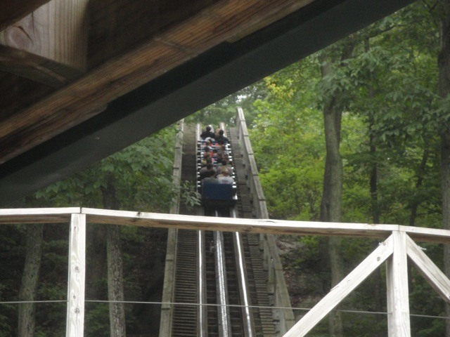
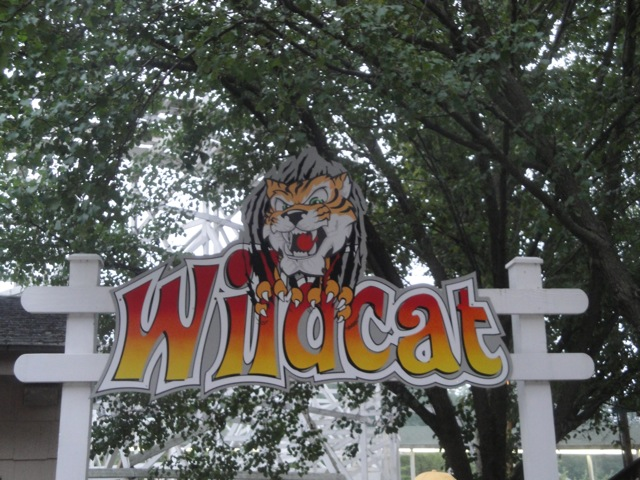
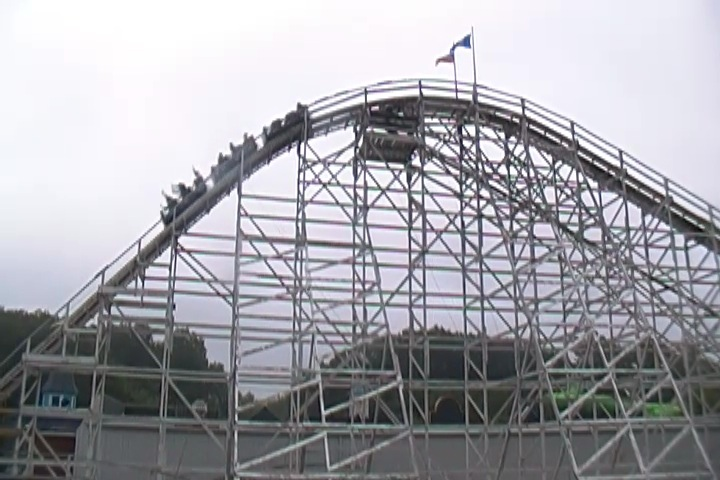

TPR's Northeast Trip
Bowcraft & NYC Coney Island
Quassy
Lake Compounce
Six Flags New England
Palace Playland Funtown Splashtown Canobie Lake Park La Ronde Great Escape Six Flags Great Adventure
After all the fun that we had at Quassy, it was time to head over to Lake Compounce to have even more fun.
This park totally reminds of Kennywood. In just about every single way.
Both parks have one signature amazing Top 10 Coaster, both parks have a nice flat ride collection, combinding old classic flats with cool new modern flats, and both have a really nice atmosphere, rich in history.
They both even have Potato Patch Fries. Yeah. I love this park already. =)
 Yeah. Lets just get this out of the way as quickly as possible.
Yeah. Lets just get this out of the way as quickly as possible.
Well, at least this was one of the better Boomerangs.
"It's at times like this when I really wonder if credit whoring is even worth it."
 I'm not sure what we're riding next, but we better call Dan and tell him to get his ass on this ride.
I'm not sure what we're riding next, but we better call Dan and tell him to get his ass on this ride.
 Yeah. This log flume had a really nice setting.
Yeah. This log flume had a really nice setting.
"I can't believe I got wet on a water ride!!!! Next you'll be telling me you actually pigs don't fly!!!"
Oh, and like Holiday World, Lake Compounce also gives out free drinks. THANK YOU LAKE COMPOUNCE!!!! YOU GUYS ARE AWESOME!!!!
 All right. Time to check out what is claimed as one of the greatest wooden coasters of all time. Boulderdash.
All right. Time to check out what is claimed as one of the greatest wooden coasters of all time. Boulderdash.

The setting on this ride kicks ass!!! This looks more like a cliff jumping spot than an amusement park. So that alone makes it pretty damn cool.
 And it turns out all that hype is indeed correct. BOULDERDASH IS AMAZING!!!!!!!!!!!
And it turns out all that hype is indeed correct. BOULDERDASH IS AMAZING!!!!!!!!!!!
I hope you like S&S Towers because you're going to be seeing A LOT of them in this update. So get used to them.
"Hey guys!!! How's it going!!?"

Ok, after Boulderdash, this is gonna be sh*t.

And it was. Even if Boulderdash wasn't here, it'd still be a crappy wooden coaster.
"Hey. A credit's a credit. No matter how sh*tty." =)
The water park here actually looks nice. Too bad I didn't have time to check it out.
 Dude!!! Those slides literally plop you right in Lake Compounce!!! That's just awesome!!!
Dude!!! Those slides literally plop you right in Lake Compounce!!! That's just awesome!!!
"I heard that Piers and Britney had some fun on the rapids ride. Care to reenact that moment for us please?"
Lake Compounce served us an awesome dinner with a lot more variety than just typical amusement park crap such as a burrito bar, mac & cheese, ribs, and lots more.
 We simply have to ride Boulderdash some more. It's that good.
We simply have to ride Boulderdash some more. It's that good.
 INot suprised in the least about that.
INot suprised in the least about that.
 Those hills right there have some really really crazy ejector air. DO NOT underestimate those hills.
Those hills right there have some really really crazy ejector air. DO NOT underestimate those hills.
 Basically, the best way for me to describe Boulderdash is that it's like what the Beast SHOULD be like, but is not, because that rides lame and this rides awesome.
Basically, the best way for me to describe Boulderdash is that it's like what the Beast SHOULD be like, but is not, because that rides lame and this rides awesome.
"Come on Antonio!!! Get your ass on the enterprise!!!"
We decided to check out their Shooting Dark Ride since we lots of time and everything in this park is worth checking out.
Watch out for these statues. They spit water at you when you least expect it.
Yeah. Looks like your typical Sally Shooting Dark Ride.
Though I'd definetly give this the award for hardest shooting dark ride ever!!!! It is physically impossible to hit these targets!!! I only hit ONE THING during the entire ride!!!!!
Screaming Swings are always fun, though this one was a little on the short side.
We had a spinning contest on the Tornado here to see who could spin theirs the fastest. Yeah, that made for an insane ride. And I forgot who won.
Sweet!!! They have flyers here as well!!!!
Unfortunetly, they too, were unsnappable. LAME!!!!!!!!! =(
"I wish I had a car as cool as this, but unfortunetly, I don't even have a car at all. Yeah yeah, I know. I'm such a bad Californian."
New at Lake Compounce this year, was their Disko, Revolution. It was fun and ran a good program.
 Oh yeah. Right when the park closed, Lake Compounce opened up the kiddy coaster for us sad and pathetic credit whores.
Oh yeah. Right when the park closed, Lake Compounce opened up the kiddy coaster for us sad and pathetic credit whores.
 "Hey!!! I am proud of my credit whoring and you should be too!!!"
"Hey!!! I am proud of my credit whoring and you should be too!!!"
All right!!! Now we get to have Boulderdash ERT!!!! And let met tell you, this thing is a f*cking BEAST at night!!!!
In fact, Boulderdash is so good that it officially replaced Coaster as the #1 woodie of all time on Incrediblecoasters!!!
Yeah. This was an insane ERT session.
Six Flags New England
Home